EGM은 무엇인가요
보통 에이전트에게 만들라고 하면 바로 만들어요. 문제는 다 만든 뒤에야 드러나죠. EGM은 순서를 뒤집어요. 만들기 전에 계획부터 여러 에이전트에게 뜯기게 해요.
영상은 이것을 Google식 스펙 주도 개발이라고 소개해요. 앱의 완전한 계획을 먼저 쓰고, 에이전트는 그 계획만 따라 지어요. 계획에 다 적혀 있으니 구현하는 동안 추측할 게 없어요.
바탕이 된 글은 Dave Rensin의 Medium 글이에요. 화면에 제목과 함께 'Google engineers' 배지가 보여요.
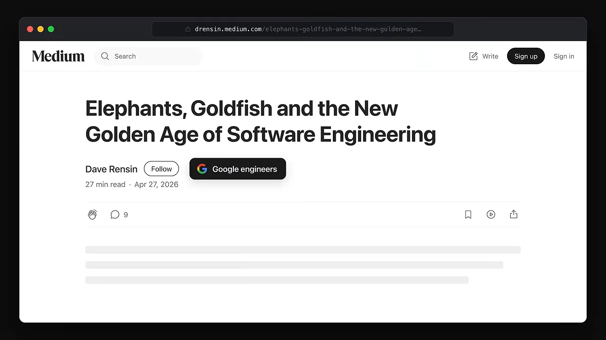
결과물은 계획 문서 하나로 끝나지 않아요. 왼쪽은 계획(Plan), 오른쪽은 무엇을 만들지(Build)와 어떻게 확인할지(Test)를 짝지은 체크리스트예요. 아래 진행 막대가 차면 기능이 끝난 거예요.
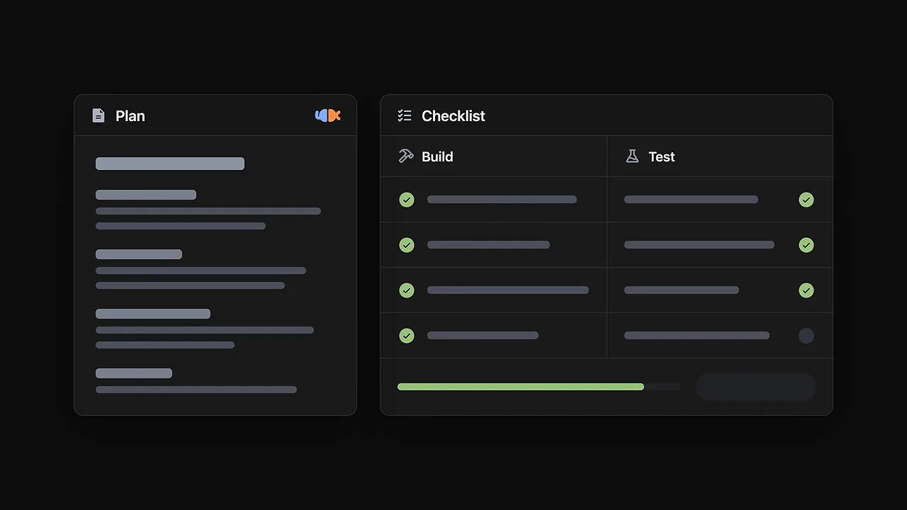
코끼리와 금붕어, 그리고 사람
EGM은 역할을 셋으로 나눠요. 코끼리, 금붕어, 그리고 사람이에요. 핵심은 각자 무엇을 볼 수 있는지가 다르다는 점이에요.
코끼리는 다 기억하고, 금붕어는 아무것도 기억하지 않아요
코끼리는 프로젝트의 역사, 앱이 짜인 방식, 누가 어떻게 쓰는지를 알아요. 사람과 아이디어를 길게 이야기하고, 실패할 지점을 찾고, 계획 파일을 써요. 금붕어는 컨텍스트가 비어 있는 서브에이전트예요. 계획과 앱 코드만 보고, 앞선 대화는 보지 못해요.
아래 그림은 둘이 볼 수 있는 범위를 나란히 놓은 거예요. 금붕어 쪽에서 대화 칸이 빠져 있는 게 전부예요.
영상 화면도 같은 이야기를 해요. 주황색 금붕어에서 점선이 plan.md와 Your app 두 카드로만 이어져요.
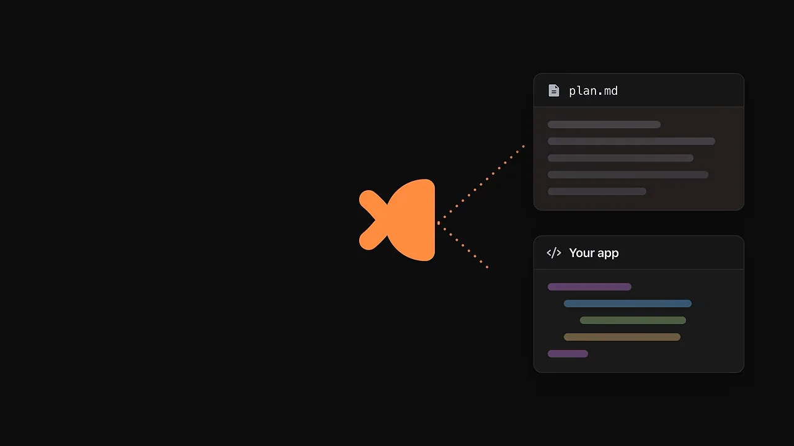
금붕어는 한 마리가 아니에요. 각자 다른 각도로 계획을 봐요. 영상이 말로 든 예는 이래요.
| 금붕어가 보는 각도 | 묻는 질문 |
|---|---|
| 더 단순한 길 | 계획보다 쉬운 방법이 있나? 앱에 이미 같은 일을 하는 게 있나? |
| 처음 읽는 사람 | 앱을 전혀 모르는 사람이 읽어도 말이 되나? |
| 많은 사용자 | 사람이 한꺼번에 몰려 쓸 때 생기는 문제는 없나? |
| 구현 준비 | 모델이 추측 없이 바로 만들 수 있을 만큼 명확한가? |
| 문서 자체 | 계획이 어떻게 쓰이고 구성됐는가? (두어 마리가 더 봐요) |
코끼리와 금붕어가 둘 다 동의한 최종 계획이 나오면, 다른 에이전트들이 그 계획을 출발점으로 삼아 일해요. 화면 왼쪽 두 역할이 가운데 Plan에 체크를 받고, 오른쪽 에이전트 셋이 그걸 받아 가요.
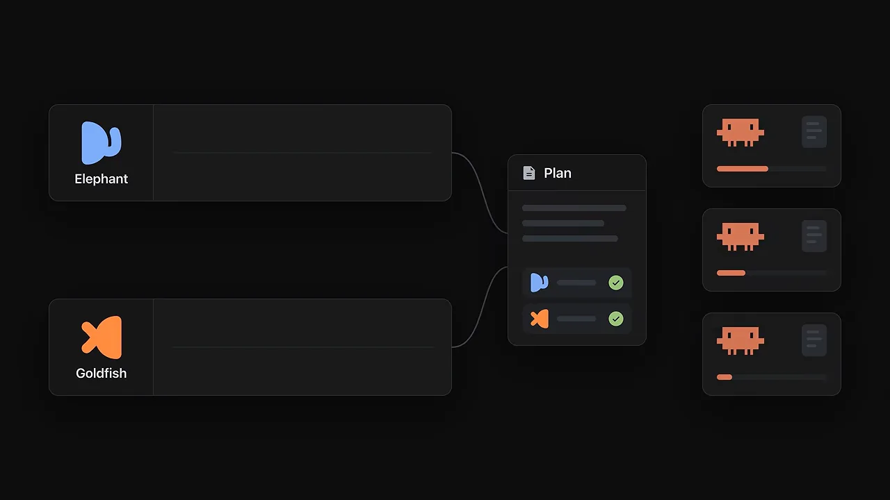
플랜 모드로는 왜 부족할까요
영상은 플랜 모드의 한계를 두 가지로 짚어요. 화면은 그중 두 번째를 보여 줘요. 하나의 Context window 안에 사람 말, plan.md, 그리고 'check the plan' 요청이 다 들어 있어요. 오른쪽 금붕어는 그 창 밖에 있어요.
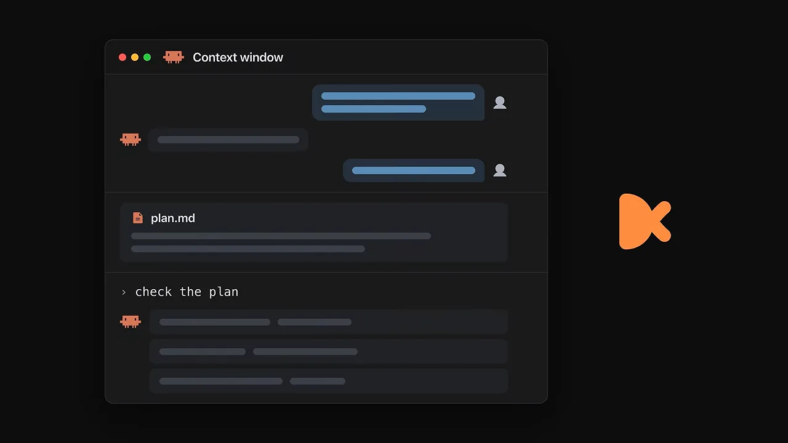
| 일반 플랜 모드 | EGM | |
|---|---|---|
| 계획 쓰는 법 | 아이디어 설명 → 큰 질문 몇 개 → 계획 | 문제가 분명해질 때까지 질문하고 여러 각도로 분석 |
| 검토하는 쪽 | 같은 대화 속 같은 에이전트 | 대화를 못 본 금붕어들 |
| 남는 문제 | 빈틈이 나중에 드러나 다시 고쳐야 해요 | 빈틈을 만들기 전에 찾아요 |
영상은 이 설계의 이유를 Google의 진단으로 설명해요.
Google says the main problem with models is that they stick to their own wrong ideas and agree with what you want instead of catching mistakes.
Google은 모델의 가장 큰 문제가 자기 틀린 생각을 고집하고, 실수를 잡기보다 사용자가 원하는 쪽에 동의하는 것이라고 봐요.
— 영상 03:49
세 번째 역할은 사람이에요
금붕어들은 의견을 많이 내요. 일부러 그렇게 만들었어요. 화면 아래 You가 금붕어 의견 카드들을 왼쪽 Keep과 오른쪽 Ignore로 나눠요. 모델은 아이디어를 내고 검토하지만, 최종 결정은 사람이 해요.
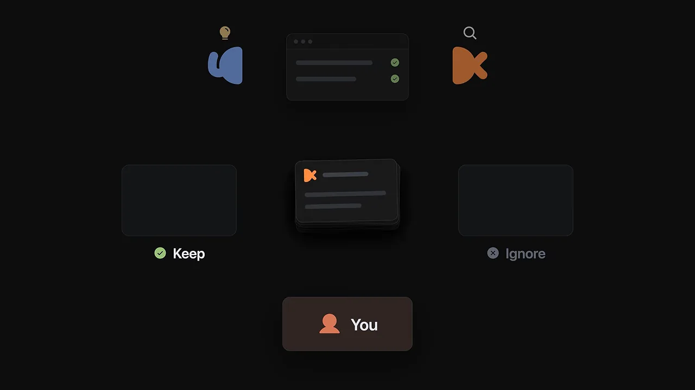
금붕어들은 '좋은 계획이 갖춰야 할 것'을 적은 규칙을 체크리스트처럼 써서 점수를 매겨요. 또 검토는 Review 서브에이전트 하나가 다른 서브에이전트 여러 개를 띄우는 구조예요. 화면 왼쪽 금붕어 여섯이 가운데 Review로 모이고, 오른쪽 Main agent의 컨텍스트 사용량은 84%에서 12%로 줄어 있어요.
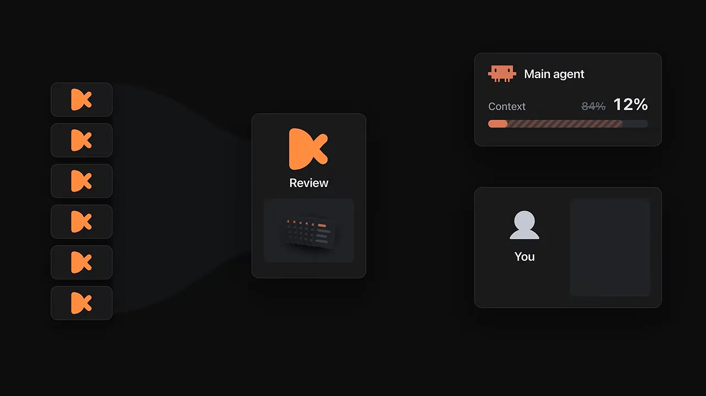
기능을 다 만든 뒤에도 계획은 쓸모가 있어요. drift라는 점검이 계획과 앱을 비교해서 어긋난 곳을 모두 짚어 줘요. 이건 마지막 섹션에서 데모로 봐요.
설치하고 CLAUDE.md 한 줄 고치기
EGM은 Claude Code 전용이 아니에요. 저장소 README의 Install 표에 에이전트별 명령이 따로 있어요. 맨 위 'Any AI agent' 줄은 에이전트에게 저장소 링크를 주며 설치해 달라고 하는 방식이고, 그 아래로 Antigravity, Claude Code, Codex 줄이 있어요.
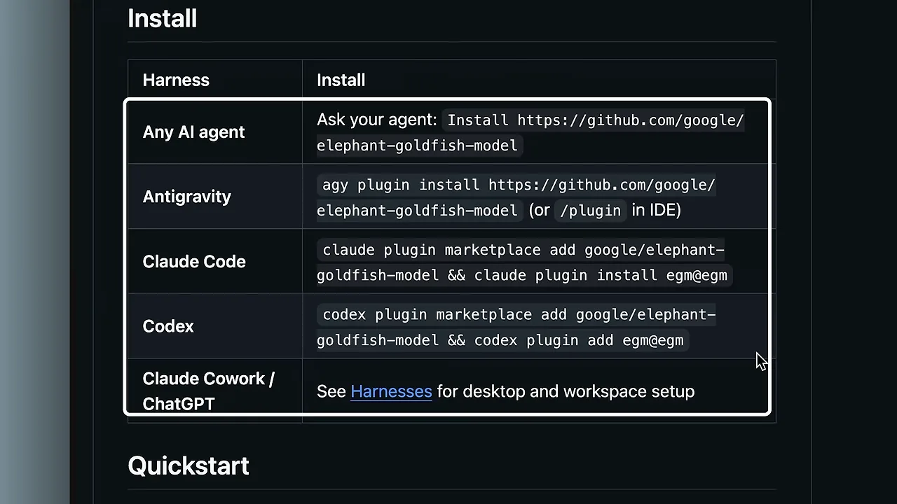
egm@egm 플러그인을 설치하는 두 명령이에요. 영상 05:04에서 보기영상은 웹사이트의 설치 프롬프트를 썼어요. 'install' 뒤에 저장소 링크를 붙인 한 줄이에요. 이걸 에이전트에 보내면 저장소를 내려받아 프로젝트에 설정까지 해 줘요. 다 되면 .claude 폴더 안에 세 폴더가 생겨요.
| 폴더 | 들어 있는 것 | 역할 |
|---|---|---|
agents | 방법론이 쓰는 에이전트 정의 | 금붕어 |
egm | 저장소 전체 사본 | 참고 자료 |
skills | 단계마다 실행하는 스킬 (brainstorm, review 등) | 코끼리 |
그중 중심은 brainstorm 스킬이에요. 화면의 SKILL.md 설명을 보면 'Interactive ideation', 즉 대화로 아이디어를 다듬는 스킬이에요. 설익은 개념을 명확한 질문으로 구조화된 가설로 바꾸고, 사람이 검토할 요약을 만든 뒤 /egm-draft로 넘겨요.
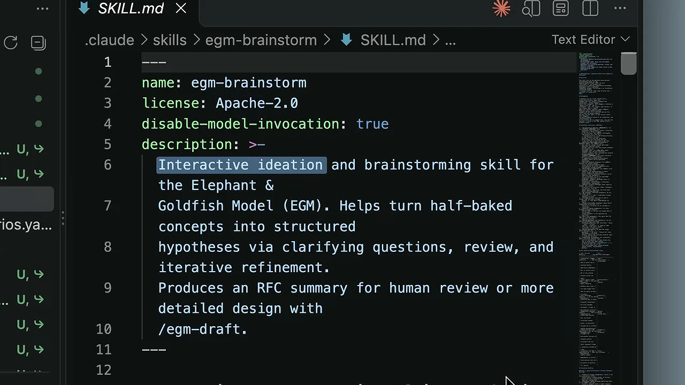
CLAUDE.md의 틀린 한 줄
Claude Code로 설치하면 이 도구용 지시를 CLAUDE.md에도 적어요. 영상은 그 파일 끝부분의 한 줄을 꼭 확인하라고 해요. 11번 줄에 'Claude Code 서브에이전트는 자기 서브에이전트를 띄울 수 없으니, synthesizer 대신 직접 띄우라'고 적혀 있어요.
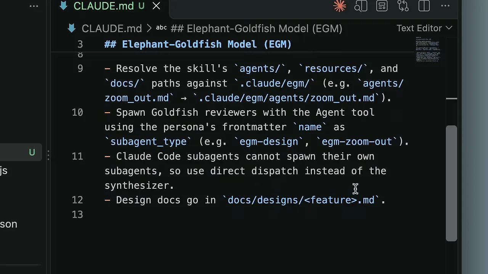
물어보니 Claude는 저장소가 시킨 게 아니라 자기가 직접 쓴 줄이라고 답했어요. 서브에이전트도 서브에이전트를 띄울 수 있다고 알려 주자, 직접 테스트한 뒤 그 줄을 바꿨어요. 아래 화면에서 'Test nested subagent spawning' 에이전트가 끝났고, 빨간 11번 줄이 초록 줄 'Subagents can nest, so hierarchical dispatch through egm-synthesizer works'로 바뀌었어요.
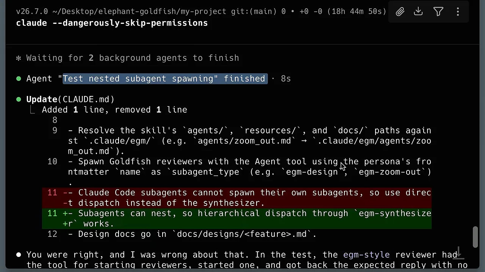
저장소가 자주 바뀌니 이 문제를 안 만날 수도 있어요. 그래도 CLAUDE.md에 비슷한 줄이 보이면 고쳐 달라고 하세요. 아니면 웹사이트에서 쓰는 에이전트 탭(Claude Code, Codex, Antigravity)을 골라 전용 명령으로 설치하면 이런 충돌이 없어요.
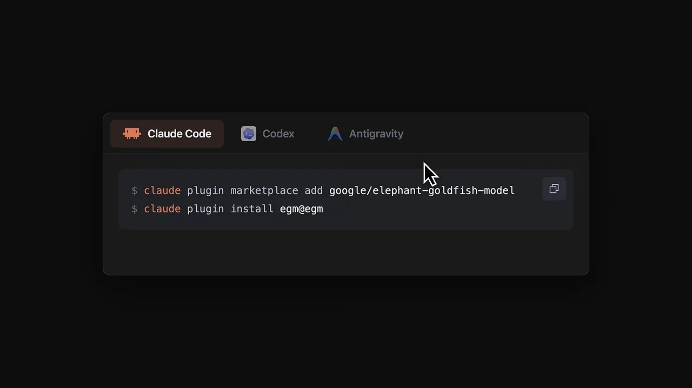
bootstrap: 코끼리에게 앱을 알려 주기
데모 대상은 이미 대부분 만들어 둔 패션 마켓 앱이에요. 화면의 Threadmark는 여러 독립 옷가게를 한 장바구니로 묶는 앱이에요. 여기에 판매자용 페이지를 하나 더하려 해요. 사이즈별로 무엇이 팔리고, 무엇이 품절됐고, 언제 재입고해야 하는지 보여 주는 페이지예요.
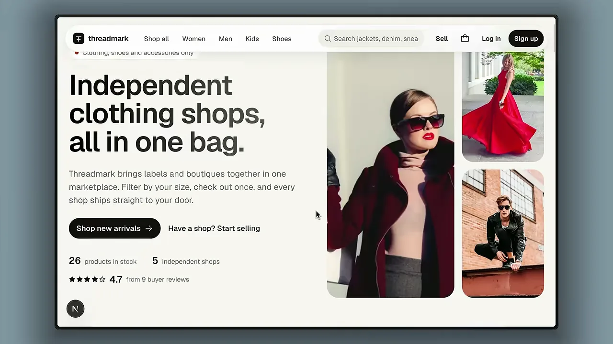
폴더마다 README를 써요
워크플로는 brainstorm부터지만, 그 전에 egm-bootstrap을 돌려요. 코끼리가 새 기능을 계획하기 전에 앱이 어떻게 돌아가는지 알려 주는 단계예요. 폴더를 하나씩 돌며 그 폴더 코드가 하는 일과 지켜야 할 규칙을 README로 써요.
폴더가 15개를 넘으면 먼저 물어봐요. 터미널의 'User answered Claude's questions' 아래에 '대상 폴더 트리에 하위 폴더가 15개 넘게 있다, 전체를 bootstrap할까?'라는 질문과 'Yes, proceed' 답이 보여요.
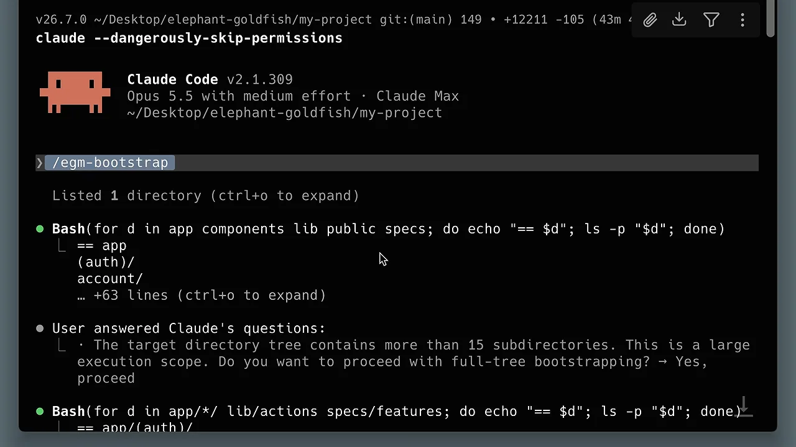
계속하라고 하자 서브에이전트들이 앱의 여러 부분을 나눠 맡았어요. 화면 오른쪽 위 Subagents 18이 동시에 띄운 수이고, 가운데 확인창은 'README 24개를 쓸까요?'라고 물어요.
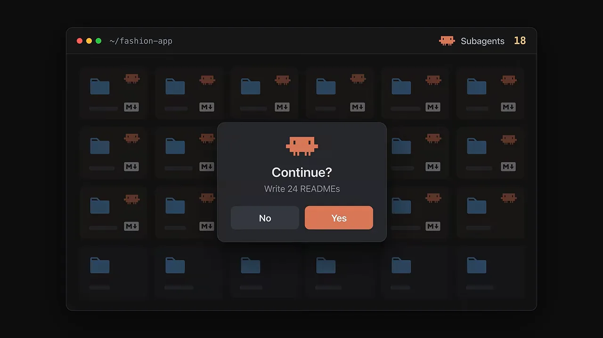
데모에서는 README 28개를 새로 쓰고, 원래 있던 루트 README도 고쳤어요. 루트 README에 새 섹션이 생겨요. 앱의 각 부분이 하는 일, 항상 지켜야 할 불변 규칙, 실행할 때 바뀌는 것이 정리돼요. 화면의 'Local Interface & Invariants' 섹션이 그 예예요. 로그인 쿠키가 없으면 어디로 보내는지, 그 검사가 어디까지만 믿을 만한지까지 적혀 있어요.
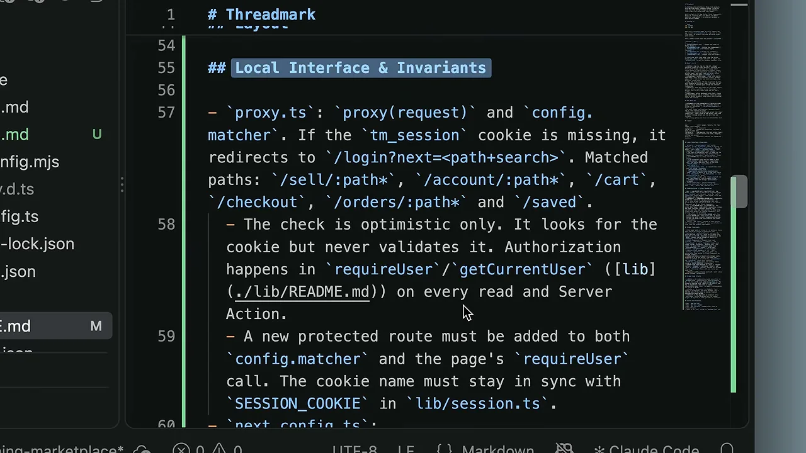
코드가 있는 폴더는 모두 README를 받아요. 폴더의 목적, 안에 든 것, 각 부분이 하는 일, 부분끼리 어떻게 이어지는지가 담겨요. 코드가 없는 폴더는 건너뛰어요. 이 앱을 만들 때 쓴 계획을 모아 둔 specs 폴더가 그랬어요.
README만으로는 Claude가 읽지 않아요
문제가 하나 있어요. README는 사람이 읽으라고 쓰는 파일이라, 에이전트는 시키지 않으면 따로 읽지 않아요. bootstrap이 README만 쓰면 Claude Code는 그걸 모르고 지나가요. 영상은 해결책을 셋 들어요.
- README 옆마다
CLAUDE.md를 둬요 — 그 파일에 README도 읽으라고 써요. Codex를 쓰면AGENTS.md를 둬요. - bootstrap을 다시 돌려요 — 처음부터
CLAUDE.md도 만들라는 설정을 더해서요. - 루트
CLAUDE.md에 한 줄 넣어요 — 작업하는 폴더마다 README를 읽으라고요.
영상은 첫 번째를 골랐어요. 아래 그림이 그 결과예요. 왼쪽 CLAUDE.md의 'Read each folder's README.md' 한 줄에서 선이 checkout, products, sellers, sizes 폴더의 README로 뻗어 나가요.
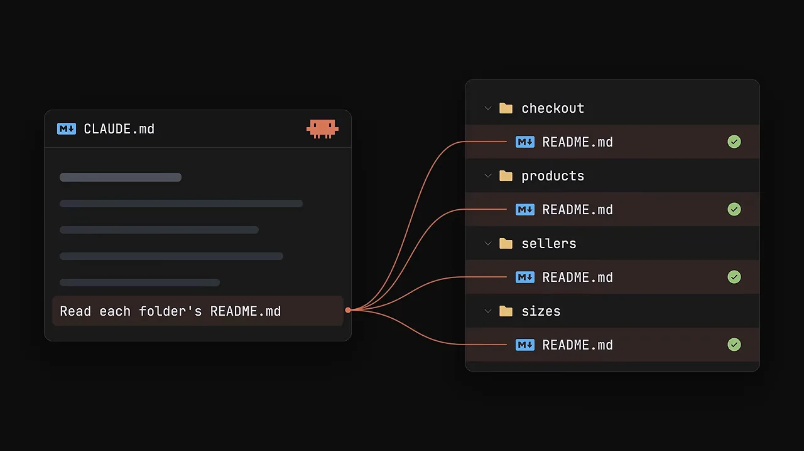
CLAUDE.md는 Claude Code가 알아서 읽으니, 거기서 README로 길을 터 주는 거예요. 영상 09:18에서 보기brainstorm과 draft: 아이디어에서 설계 문서까지
bootstrap이 끝나면 본격적으로 기능을 설계해요. 단계는 GitHub 저장소에 순서대로 나와 있고, 하나씩 돌리면 돼요. 영상 전체에 흩어진 단계를 한 줄로 모으면 이래요.
flowchart LR A["bootstrap
폴더별 README"] --> B["brainstorm
질문 + 금붕어 6"] B --> C["concepts_brief.md"] C --> D["draft
부분마다 승인"] D --> E["review
금붕어 5라운드"] E --> F["docs/designs/
Proposed"] F --> G["새 대화에서 구현"] G --> H["drift report"]
brainstorm: 질문을 다 받아 내요
egm-brainstorm에 추가할 기능을 말하면 시작해요. 데모에서는 이 기능의 계획이 이미 있었는데, 그 계획의 문제를 모두 짚은 뒤 질문을 잔뜩 했어요. 계획이 없으면 질문이 더 많아져요. 다 답하면 기능을 어떻게 만들지 최선의 가설을 내놓아요.
화면 위쪽 상자가 그 가설이에요. 핵심은 판매자용 /sell/insights 페이지에 사이즈별 판매량, 품절 기간, 재입고 제안을 보여 주는 거예요. 아래에 선택지가 둘 있어요. 1번 'Review with Goldfishes'는 이 가설을 고정하고 금붕어 여섯 관점으로 검토해요. 2번 'Clarify more in chat'은 대화로 더 다듬어요.
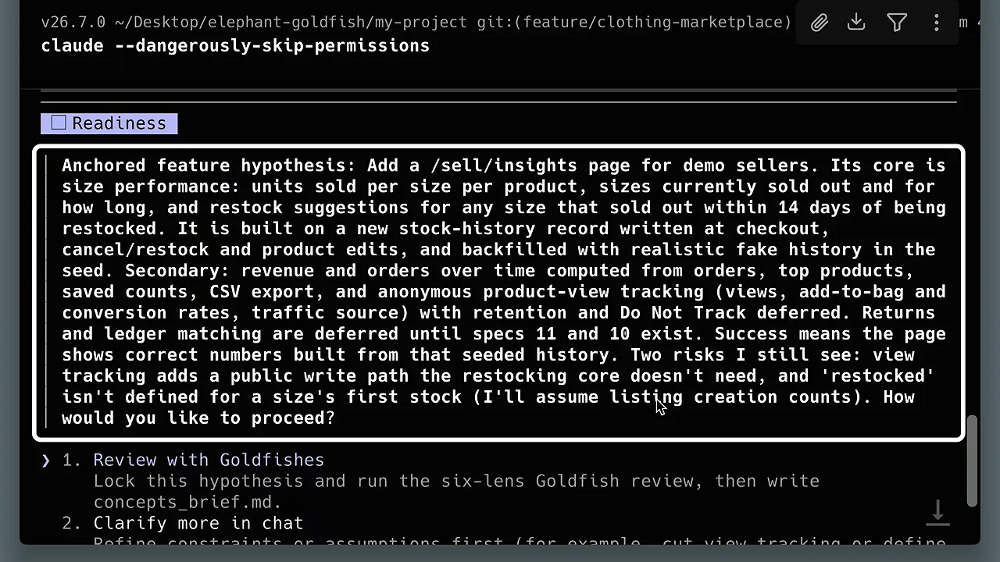
영상은 접근이 괜찮다고 보고 금붕어 검토를 골랐어요. 서브에이전트 하나(egm-synthesizer)가 뒤에서 여섯을 더 띄우고, 각자 대화를 모른 채 새로 시작해요. 화면에 여섯 관점이 적혀 있어요.
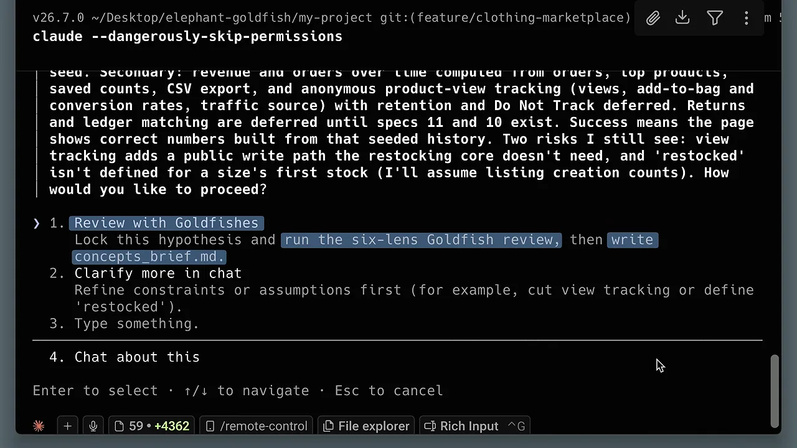
검토가 끝나면 프로젝트 루트에 concepts_brief.md를 써요. 기능 설명, 조사하며 알게 된 것, 걸림돌, 해야 할 일이 담겨요. 원하는 것과 맞는지 읽어 보고, 고칠 게 있으면 몇 번이든 요청하면 돼요.
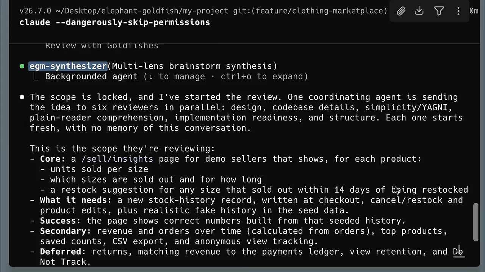
draft: 한 부분씩 승인받으며 써요
브리프가 마음에 들면 egm-draft를 돌려요. 브리프를 계획의 첫 버전인 design draft로 바꿔요. 먼저 기능, 해결할 문제, 할 것과 안 할 것을 써서 빠지는 게 없게 해요. 터미널에 '첫 섹션을 썼다: Overview, The Problem, Goals, Non-Goals, Open Questions, 그리고 사용자 여정 다섯 개'라고 나와요.
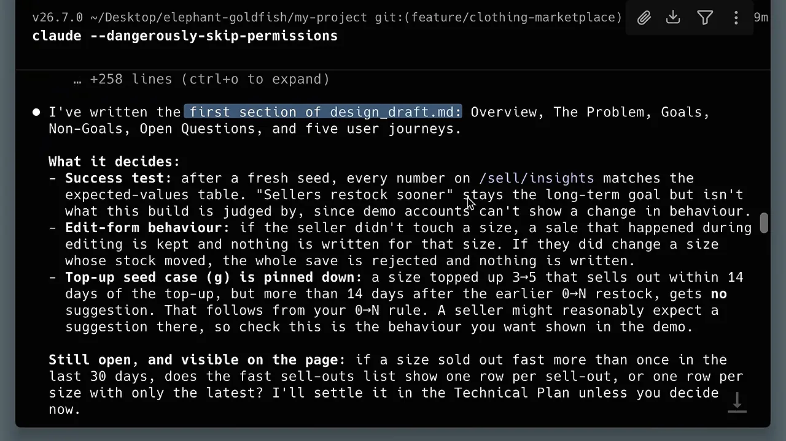
사용자 여정은 크리티컬 유저 저니(CUJ(Critical User Journey))로 적어요. 사람이 기능을 쓰며 지나가는 주요 경로라서, 나중에 테스트를 바로 이 위에 쓸 수 있어요. 화면의 CUJ 1은 Given(시작 상태), When(행동), Then(결과) 형식이에요.
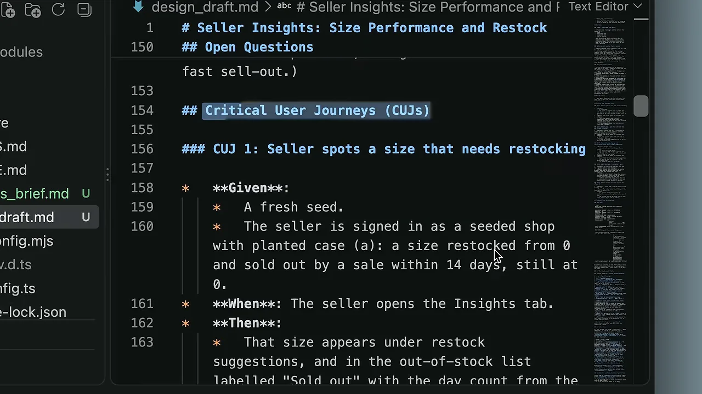
승인할 때마다 다음 부분으로 넘어가요. 앞부분을 먼저 확인받으니, 그 위에 다음 부분이 쌓이기 전에 방향을 틀 수 있어요. 순서는 이래요.
- 기능 정의 — 문제, 목표, 하지 않을 것, 크리티컬 유저 저니
- 기술 계획 — 실제로 어떻게 만들지
- 검토한 대안 (Alternatives Considered) — 다른 구현 방법마다 장단점과 버린 이유
- 단계별 구현 계획 — 대안을 읽고 나면 이어져요
아래 화면이 대안 섹션 끝이에요. '이 섹션에서 가장 약하게 기각한 대안'까지 따로 적고, 승인하면 구현 계획으로 넘어가겠다고 물어요. 맨 아래에 사람이 친 'approve'가 보여요.
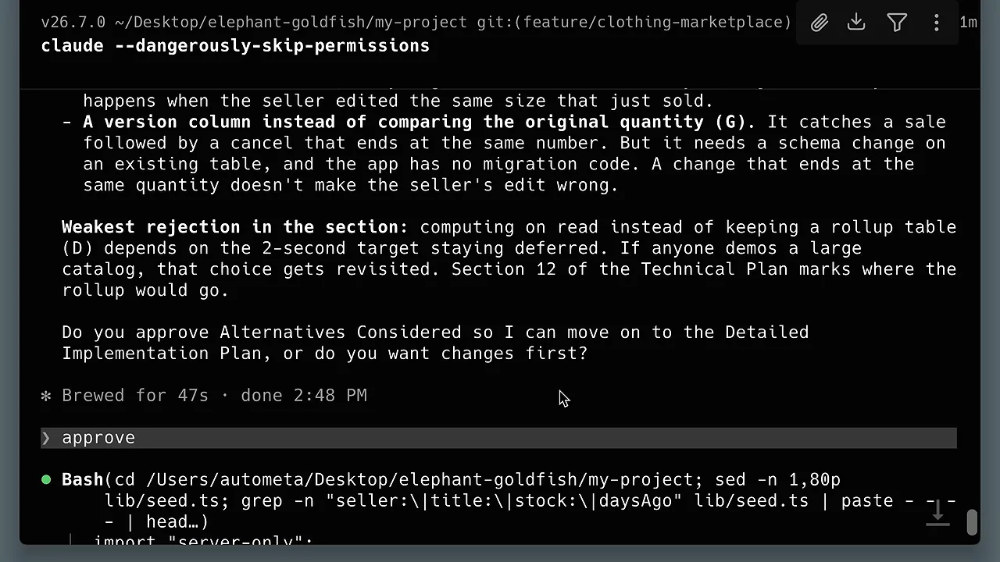
다 쓰면 docs/designs/ 폴더에 기능 이름으로 파일을 저장해요. 이 방식으로 만드는 모든 기능이 여기 모이고, 에이전트에게 만들라고 할 때 가리키는 것도 이 파일이에요.
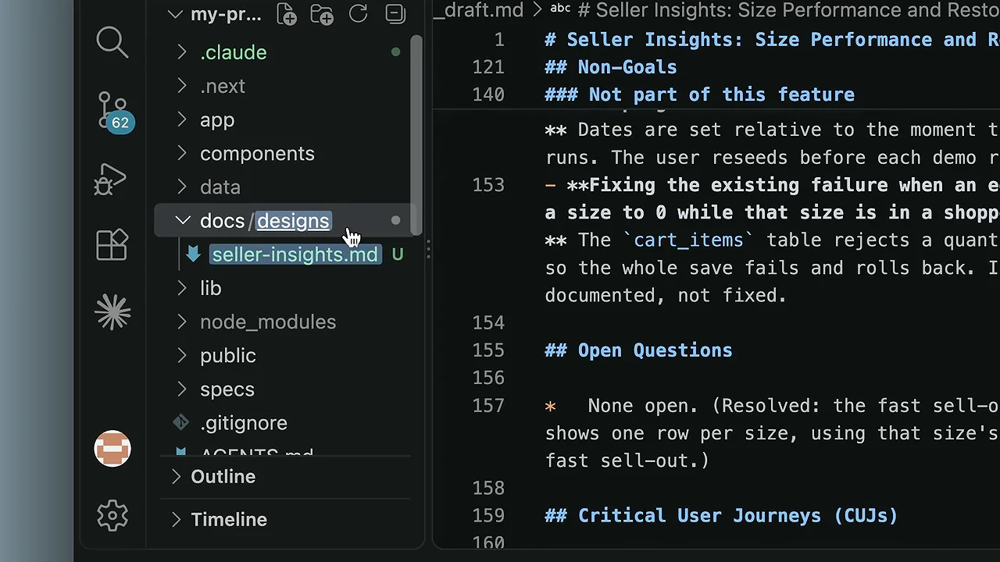
review: 금붕어 다섯 라운드
여기까지의 계획은 처음부터 사람에게 동의해 온 그 에이전트가 썼어요. 그래서 만들기 전에 금붕어에게 넘겨요. egm-review를 돌리면 zoom out이라는 서브에이전트부터 시작해요. 더 쉬운 구현 방법이 있는지, 앱에 이미 같은 일을 하는 게 있는지 보고, 대화는 전혀 몰라요.
터미널을 보면 문서를 둘로 나눠 봐요. 1~671줄이 기능 명세, 672~1080줄이 구현 계획이에요. 'Stage 5 (Initial Zoom Out) is running now'라는 줄 아래, 끝나면 zoom_out_report.md에 결과를 쓰고 Stage 6(Comprehension Test)으로 갈지 묻겠다고 적혀 있어요.
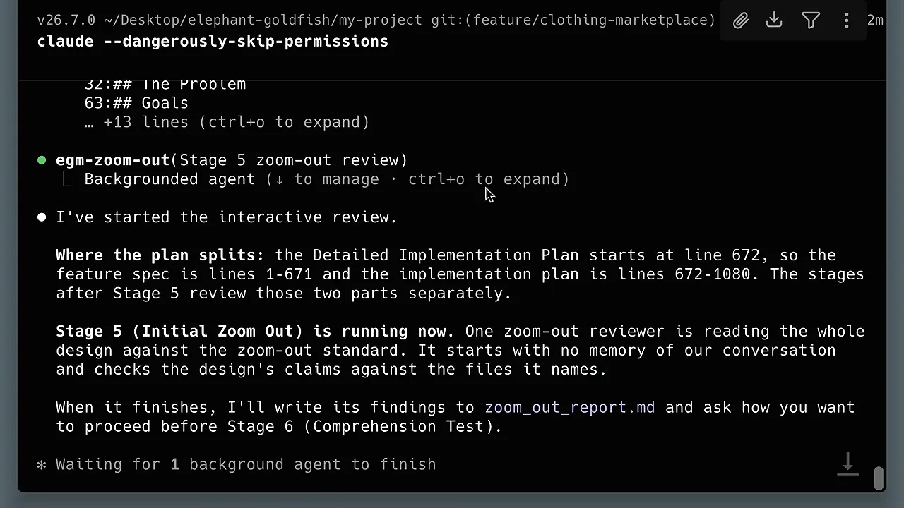
끝나면 큰 문제 목록이 나와요. 화면의 Major problems 1번은 설계 버그예요. 판매자가 사이즈 이름을 'M'에서 'Medium'으로 바꾸면 서버가 사이즈를 글자로 맞춰 보는 탓에 저장이 늘 거부돼요. 2번은 Phase 2가 Phase 1만큼 코드가 많은데 성공 기준엔 필요 없다는 지적이고, 3번은 같은 내용이 두 군데 적혀 있는데 이미 서로 다르다는 지적이에요.
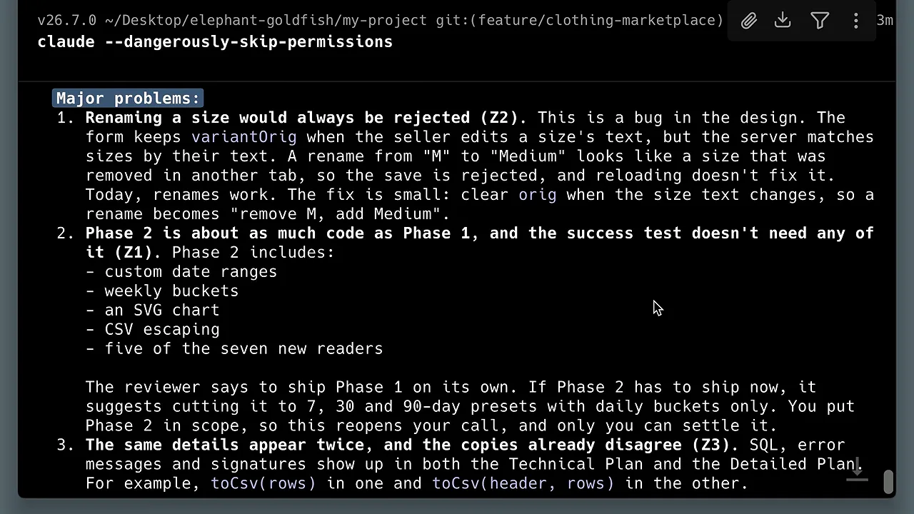
리뷰는 라운드로 진행해요. 라운드마다 한 가지 방식으로 계획을 보고 결과를 보고해요. 라운드가 끝날 때마다 다음으로 넘어가거나 수정을 요청할 수 있어요.
- 라운드는 모두 다섯 번이고, 번호는 5부터 9까지 붙어요.
- 라운드마다 보고서를 따로 쓰고,
docs/designs의 계획을 그 결과대로 고쳐요. - 다 끝나면 리뷰를 닫아요. 문서 상태가 In Review에서 Proposed로 바뀌어요.
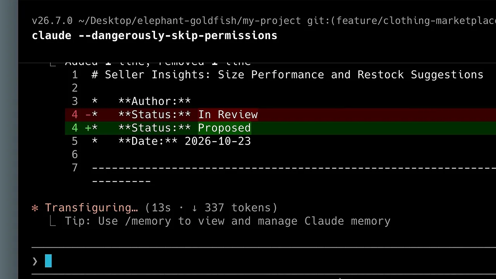
결국 남는 건 docs/designs의 파일 하나예요. 새 대화를 열고 이 파일의 기능을 만들라고 하면 돼요. 화면에 'build the feature described in the docs/design/seller-insights.md'라는 요청이 보여요. 까다로운 경우를 만들기 전에 다 풀어 뒀고, Claude가 따를 규칙이 분명해서 결과가 훨씬 낫다고 해요.
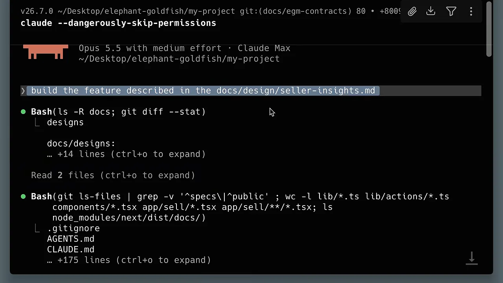
drift report와 언제 쓸지
drift report: 문서와 코드가 어긋난 곳 찾기
기능을 다 만들어도 앱은 계속 바뀌고, 문서는 그대로 남아요. 이렇게 둘이 조금씩 벌어지는 걸 드리프트라고 해요. 그래서 앱이 README와 어긋나는 곳을 찾는 명령이 따로 있어요. egm-drift-report를 돌리면 앱의 어디까지 볼지 먼저 물어요.
터미널에서 'drift report가 어떤 문서와 코드를 대조할까요?'라는 질문에 All READMEs(권장)를 골랐어요. 그러자 서브에이전트 둘이 떴어요. 하나는 root, lib, actions를, 다른 하나는 components를 맡아요.
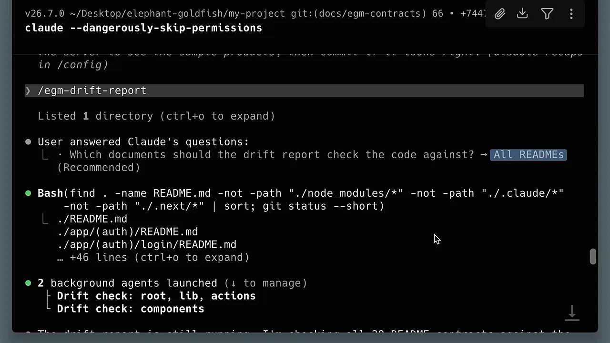
둘이 돌아오면 무엇이 바뀌었고 어디서 앱과 README가 어긋나는지 전체 보고서를 써요. 실제 버그도 잡혔어요. 화면의 'Real bugs in the code' 2번이 영상이 고른 예예요. 판매된 상품은 숨길 수만 있고 지울 수 없다는 규칙('listings with sales can only be archived')이 있는데, 상점 주인이 그런 상품을 지울 수 있었어요.
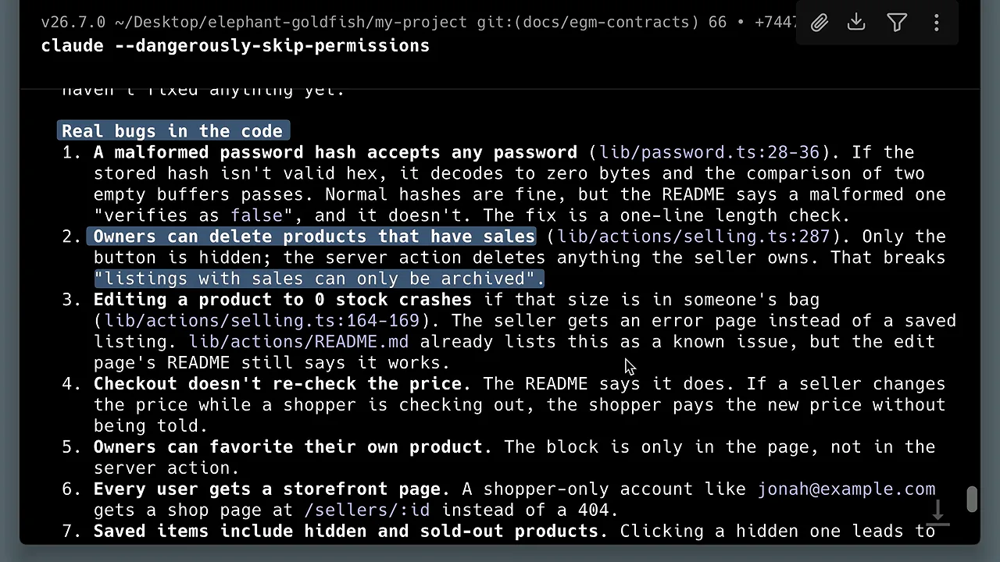
보고서에 찾은 것을 다 나열하고, 앱의 부분마다 고쳐 달라고 할 수 있어요. 문서와 코드 중 무엇을 고칠지는 사람이 정해요.
언제 쓰고, 언제 안 쓸까요
영상의 결론은 '잘못되면 비용이 큰 큰 기능'에 쓰라는 거예요. 지금까지 써 본 다른 방법보다 엣지 케이스와 가능성을 더 깊게 파고들었다고 해요. 화면은 이를 그림으로 표현해요. 다른 두 방법이 3개씩 찾을 때 EGM은 11개를 찾는 모습이에요.
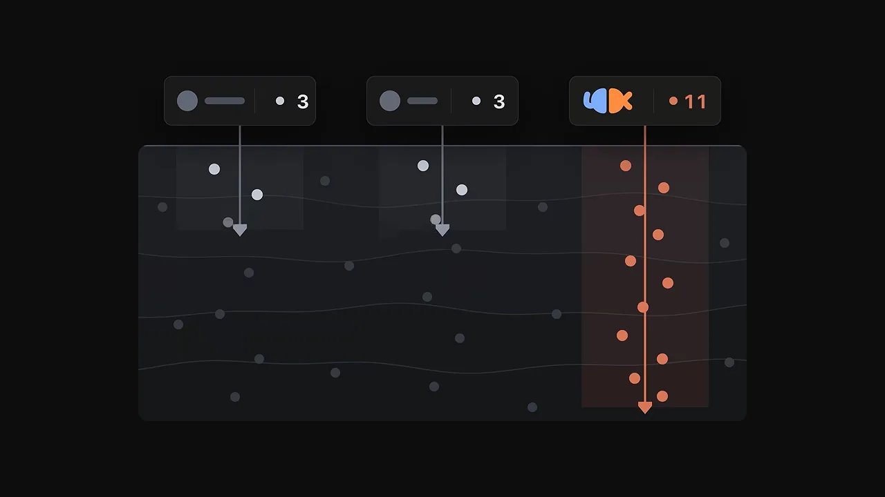
하지만 모든 일에 쓰라는 건 아니에요. 에이전트가 한 번에 끝낼 작은 수정이라면, 계획하고 검토하는 과정이 속도만 늦춘다고 Google도 말한대요. 화면 위 줄은 일반 에이전트가 small fix를 바로 끝내고, 아래 줄 EGM은 brainstorm, draft, review를 다 거치며 시간이 늘어나요. 그 위에 Google의 'not worth it' 표시가 붙어 있어요.
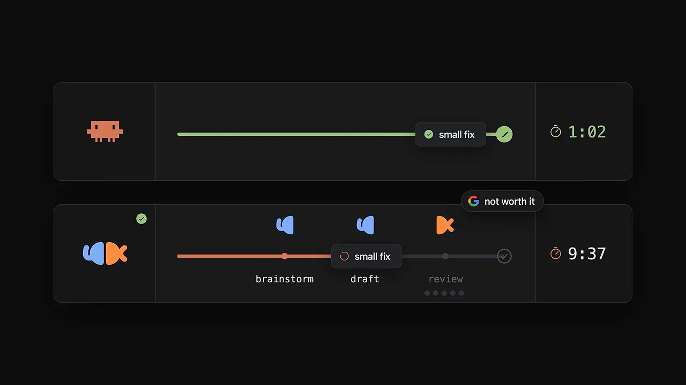
다른 계획 도구와는 두 가지가 다르다고 정리해요.
| 다른 계획 도구 대부분 | EGM | |
|---|---|---|
| 계획의 문제 찾기 | 계획은 나오지만 문제 찾기는 사람 몫이라 어려워요 | 대화를 못 본 금붕어가 찾아서, 사람 말에 설득당하지 않아요 |
| 만든 뒤 점검 | 만든 직후 기능 하나씩 확인 | 앱 전체를 계획과 다시 비교 |
아래 화면이 두 번째 차이를 보여 줘요. 다 만든(Built) 앱 위로 EGM의 세로선이 지나가며, 계획과 어긋난 칸 두 곳에 경고 표시를 남겨요.
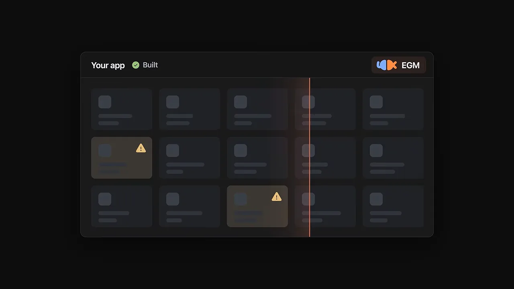